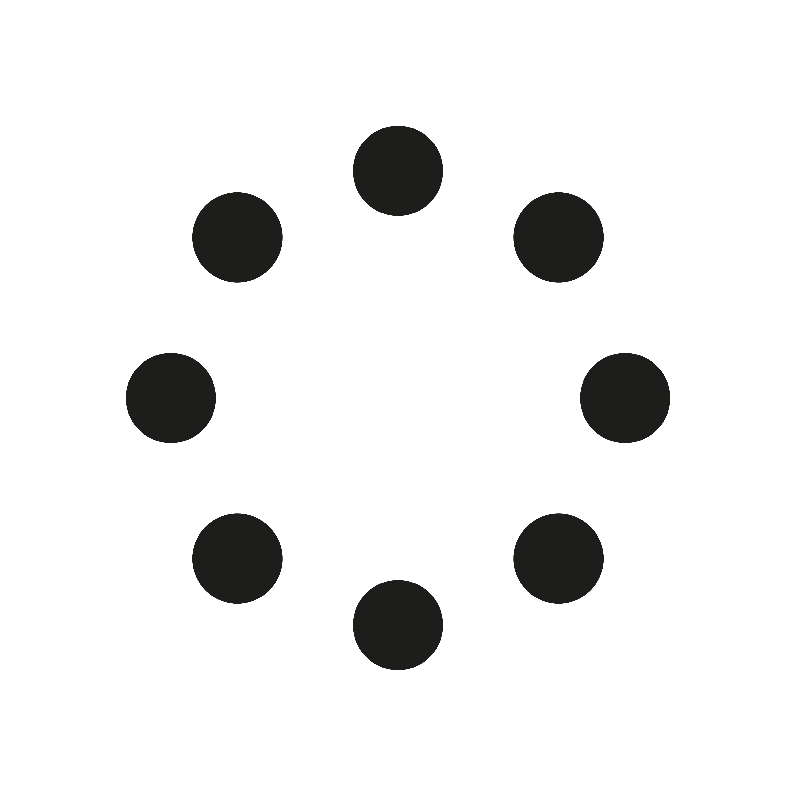

desconectado
live translation

Tu navegador necesita un toque tuyo para activar el audio de la traducción.
Si estás en iPhone, asegúrate de que el interruptor lateral de silencio NO está activado (no se ve naranja).
Hoy presentamos lo que viene. Y queremos que cada palabra te llegue exactamente como la pensamos — sin importar el idioma en el que la escuches. La moda no entiende de fronteras. Nuestra voz, tampoco.
Hablar al público y generar QR de acceso
Escuchar la traducción en mi idioma
Pulsa el micrófono para empezar